CODING AGENTS AS PIXEL WORLD MODELS
traex/DeepSeek-V4.1-Flash · 0037
点击播放 · 原生 RGB 像素
逐轮保存的候选
回放视频、检查图与代码变化。
每份候选均可单独播放。实际图片检查记录在下方工具轨迹中。
候选 01播放与检查图
点击播放 · 原生 RGB 像素
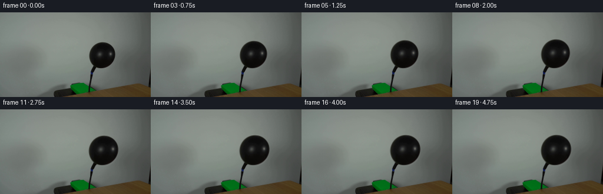
展开代码变化
--- 上一保存版本
+++ 本次保存版本
@@ -0,0 +1,127 @@
+from pathlib import Path
+
+import cv2
+import numpy as np
+from PIL import Image
+
+import artifact_io
+
+
+CASE_DIR = Path(__file__).resolve().parent
+FRAME_COUNT = 20
+WIDTH = 256
+HEIGHT = 144
+
+# Fitted to the visible balloon in first_frame.png.
+CENTER_X = 173.17
+CENTER_Y = 72.76
+RADIUS_X = 23.0
+RADIUS_Y = 24.0
+ROTATION = 0.5636
+
+# Scaling around the hose attachment keeps the balloon tied to its nozzle.
+ANCHOR_X = 156.8
+ANCHOR_Y = 96.2
+
+
+def balloon_alpha() -> np.ndarray:
+ """Build a gently antialiased matte around the photographed balloon."""
+ yy, xx = np.mgrid[:HEIGHT, :WIDTH].astype(np.float32)
+ dx = xx - CENTER_X
+ dy = yy - CENTER_Y
+ cosine = np.cos(ROTATION)
+ sine = np.sin(ROTATION)
+ local_x = cosine * dx + sine * dy
+ local_y = -sine * dx + cosine * dy
+ radius = np.sqrt(
+ (local_x / RADIUS_X) ** 2 + (local_y / RADIUS_Y) ** 2
+ )
+
+ # The source has a one-pixel photographic transition at its edge.
+ alpha = np.clip((1.035 - radius) / 0.055, 0.0, 1.0)
+ return alpha.astype(np.float32)
+
+
+def inflation_scale(frame_index: int) -> float:
+ """Ease into a steady pump, slowing slightly as the rubber tightens."""
+ if frame_index == 0:
+ return 1.0
+ progress = frame_index / (FRAME_COUNT - 1)
+ eased = 1.0 - (1.0 - progress) ** 2
+ return 1.0 + 0.16 * eased
+
+
+def render_frame(source: np.ndarray, alpha: np.ndarray, scale: float) -> np.ndarray:
+ if scale == 1.0:
+ return source.copy()
+
+ transform = np.array(
+ [
+ [scale, 0.0, ANCHOR_X * (1.0 - scale)],
+ [0.0, scale, ANCHOR_Y * (1.0 - scale)],
+ ],
+ dtype=np.float32,
+ )
+
+ # Warp color and alpha at high resolution so the expanding contour stays
+ # smooth instead of acquiring stair-steps from the small source image.
+ high_size = (WIDTH * 4, HEIGHT * 4)
+ source_high = cv2.resize(
+ source, high_size, interpolation=cv2.INTER_CUBIC
+ )
+ alpha_high = cv2.resize(
+ alpha, high_size, interpolation=cv2.INTER_CUBIC
+ )
+ transform_high = transform.copy()
+ transform_high[:, 2] *= 4.0
+ warped_color = cv2.warpAffine(
+ source_high,
+ transform_high,
+ high_size,
+ flags=cv2.INTER_CUBIC,
+ borderMode=cv2.BORDER_CONSTANT,
+ borderValue=(0, 0, 0),
+ )
+ warped_alpha = cv2.warpAffine(
+ alpha_high,
+ transform_high,
+ high_size,
+ flags=cv2.INTER_CUBIC,
+ borderMode=cv2.BORDER_CONSTANT,
+ borderValue=0.0,
+ )
+ warped_color = cv2.resize(
+ warped_color, (WIDTH, HEIGHT), interpolation=cv2.INTER_AREA
+ )
+ warped_alpha = np.clip(
+ cv2.resize(
+ warped_alpha, (WIDTH, HEIGHT), interpolation=cv2.INTER_AREA
+ ),
+ 0.0,
+ 1.0,
+ )
+
+ base = source.astype(np.float32)
+ texture = warped_color.astype(np.float32)
+ mix = warped_alpha[:, :, None]
+ composed = base * (1.0 - mix) + texture * mix
+ return np.clip(np.rint(composed), 0, 255).astype(np.uint8)
+
+
+def main() -> None:
+ source = np.asarray(Image.open(CASE_DIR / "first_frame.png").convert("RGB"))
+ if source.shape != (HEIGHT, WIDTH, 3):
+ raise ValueError(f"Unexpected first frame shape: {source.shape}")
+
+ alpha = balloon_alpha()
+ frames = np.empty((FRAME_COUNT, HEIGHT, WIDTH, 3), dtype=np.uint8)
+ for index in range(FRAME_COUNT):
+ frames[index] = render_frame(source, alpha, inflation_scale(index))
+
+ # The contract requires an exact, not merely visually equivalent, frame 00.
+ frames[0] = source
+ artifact_io.save(frames, CASE_DIR)
+
+
+if __name__ == "__main__":
+ main()
可观测工具轨迹
实际执行的命令与返回图片。
命令 1exit 0
/bin/bash -c "pwd && rg --files -g '"'!*__pycache__*'"' -g '"'!*.pyc'"' | sed -n '1,200p'"
命令 2exit 0
/bin/bash -c "sed -n '1,240p' prompt.txt"
命令 3exit 0
/bin/bash -c "sed -n '1,320p' GENERATION_RULES.md"
命令 4exit 0
/bin/bash -c "find . -maxdepth 2 -type f -printf '%p %s bytes\\n' | sort"
命令 5exit 0
/bin/bash -c "sed -n '1,260p' artifact_io.py"
命令 6exit 0
/bin/bash -c "python - <<'PY'
from PIL import Image
import numpy as np
im=Image.open('first_frame.png')
print(im.mode, im.size)
a=np.asarray(im)
print(a.shape, a.dtype, a.min(), a.max(), a.mean(axis=(0,1)))
PY"命令 7exit 0
/bin/bash -c "python - <<'PY'
from PIL import Image
import numpy as np
im=np.asarray(Image.open('first_frame.png'))
# Print dark pixel runs / bbox by row in region x130:210 y45:120
g=im.mean(2)
for y in range(50,116,2):
xs=np.where(g[y,130:210]<70)[0]+130
if len(xs):
print(y, xs.min(), xs.max(), len(xs), 'range', xs[-1]-xs[0]+1)
PY"命令 8exit 0
/bin/bash -c "python - <<'PY'
from PIL import Image
im=Image.open('first_frame.png')
im.crop((130,35,215,135)).resize((680,800),Image.Resampling.NEAREST).save('.tmp/crop.png')
PY"命令 9exit 0
/bin/bash -c "python - <<'PY'
from PIL import Image
import numpy as np
a=np.asarray(Image.open('first_frame.png')).astype(float)
for y in [44,46,48,50,60,71,82,92,94,96,98,100]:
print('y',y, [(x, tuple(a[y,x].astype(int))) for x in [145,148,150,152,155,160,174,190,195,198,200,203]])
PY"命令 10exit 0
/bin/bash -c "python - <<'PY'
try:
import cv2
print('cv2', cv2.__version__)
except Exception as e: print('no cv2', e)
try:
import scipy
print('scipy', scipy.__version__)
except Exception as e: print('no scipy', e)
PY"命令 11exit 0
/bin/bash -c "python - <<'PY'
from PIL import Image
import numpy as np
a=np.asarray(Image.open('first_frame.png')).mean(2)
for t in [50,60,70,80,90,100]:
print('threshold',t)
for y in range(44,98):
xs=np.where(a[y,140:205]<t)[0]+140
if len(xs) and (y<50 or y%4==0 or y>92): print(y,xs.min(),xs.max())
PY"命令 12exit 0
/bin/bash -c "python - <<'PY'
from PIL import Image
im=Image.open('first_frame.png')
im.crop((135,38,208,122)).resize((730,840),Image.Resampling.NEAREST).save('.tmp/balloon_zoom.png')
PY"命令 13exit 0
/bin/bash -c "python - <<'PY'
from PIL import Image
import numpy as np
a=np.asarray(Image.open('first_frame.png')).astype(float)
# examine likely wall/balloon edge columns at selected rows. print values around expected boundary
for y in [50,52,54,60,68,72,80,88,92,94]:
print('\\ny=',y)
for x in range(145,202):
m=a[y,x].mean()
if x%2==0 or (m<115): print(f'{x}:{m:.0f}',end=' ')
print()
PY"命令 14exit 0
/bin/bash -c "python - <<'PY'
from PIL import Image
import numpy as np
a=np.asarray(Image.open('first_frame.png'))
for y in range(96,135,2):
# runs of darkish pixels in x130:205
m=a[y].mean(1)
xs=np.where(m[125:215]<65)[0]+125
if len(xs):
# group contiguous
parts=np.split(xs,np.where(np.diff(xs)>1)[0]+1)
print(y, [(int(p[0]),int(p[-1])) for p in parts])
PY"命令 15exit 0
/bin/bash -c "python - <<'PY'
from PIL import Image
import numpy as np, cv2
im=np.asarray(Image.open('first_frame.png'))
g=im.mean(2)
mask=(g<105).astype(np.uint8)*255
# Keep connected components touching balloon center
num, lab, stats, cents=cv2.connectedComponentsWithStats(mask,8)
for i in range(1,num):
x,y,w,h,area=stats[i]
if area>20: print(i,(x,y,w,h,area), cents[i])
# overlay selected center comp
sel=np.zeros_like(mask)
for i in range(1,num):
x,y,w,h,area=stats[i]
if x<200 and y<100 and y+h>50: sel[lab==i]=255
out=im.copy(); out[sel>0]=(out[sel>0]*.4+np.array([255,0,0])*.6).astype(np.uint8)
Image.fromarray(out).crop((130,35,215,125)).resize((680,720),Image.Resampling.NEAREST).save('.tmp/mask_overlay.png')
PY"命令 16exit 0
/bin/bash -c "python - <<'PY'
from PIL import Image
import numpy as np
a=np.asarray(Image.open('first_frame.png')).astype(float)
for y in [52,53,54,55,56,57,58,60,64,68,72,76,80,84,88,90,92,93,94,95,96]:
# estimate edge threshold based on local wall mean around x140-150
base=a[y,140:150].mean()
vals=a[y].mean(1)
idx=np.where(vals[145:200] < base-35)[0]+145
if len(idx):
# rightmost run around balloon
print(y,'base',round(base,1),'left',idx.min(),'right',idx.max())
PY"命令 17exit 0
/bin/bash -c "python - <<'PY'
from PIL import Image
import numpy as np
a=np.asarray(Image.open('first_frame.png'))
for y in [110,112,114,116,118,120,122,124,126]:
print('\\ny',y)
for x in range(145,166):
print(f'{x}:{a[y,x].mean():.0f}',end=' ')
print()
PY"命令 18exit 0
/bin/bash -c "python - <<'PY'
from PIL import Image
import numpy as np, cv2
a=np.asarray(Image.open('first_frame.png'))
g=a.mean(2)
# Search dark balloon component in crop, threshold 100. Fit circle/ellipse to its pixels excluding hose y>95
ys,xs=np.where((g<110)&(np.indices(g.shape)[0]>=48)&(np.indices(g.shape)[0]<=95)&(np.indices(g.shape)[1]>=145)&(np.indices(g.shape)[1]<=200))
pts=np.c_[xs,ys].astype(float)
print('bbox',xs.min(),xs.max(),ys.min(),ys.max(),'n',len(xs))
# ellipse fit
ell=cv2.fitEllipse(pts.astype(np.float32)); print('ellipse',ell)
# circle fit algebraic
A=np.c_[2*xs,2*ys,np.ones(len(xs))]; b=xs*xs+ys*ys
sol=np.linalg.lstsq(A,b,rcond=None)[0]; cx,cy=sol[:2]; r=np.sqrt(sol[2]+cx*cx+cy*cy)
print('circle',cx,cy,r)
PY"命令 19exit 0
/bin/bash -c "python - <<'PY'
from PIL import Image
import numpy as np
a=np.asarray(Image.open('first_frame.png'))
for y in [125,126,127,128,129,130,131,132,133]:
print('\\ny',y)
for x in range(155,216,2): print(f'{x}:{a[y,x].mean():.0f}',end=' ')
PY"命令 20exit 0
/bin/bash -c "python - <<'PY'
from PIL import Image
im=Image.open('first_frame.png')
im.crop((100,105,230,144)).resize((1040,312),Image.Resampling.NEAREST).save('.tmp/pump_zoom.png')
PY"命令 21exit 0
/bin/bash -c "python - <<'PY'
import numpy as np
from PIL import Image
from scipy.optimize import least_squares
a=np.asarray(Image.open('first_frame.png')).astype(float).mean(2)
pts=[]
for y in range(52,95):
base=a[y,140:150].mean()
idx=np.where(a[y,145:200] < base-35)[0]+145
if len(idx):
pts.append((idx.min(),y)); pts.append((idx.max(),y))
pts=np.array(pts,float)
# rotated ellipse implicit; params cx,cy,rx,ry,theta
def resid(p):
cx,cy,rx,ry,th=p; c,s=np.cos(th),np.sin(th)
x=pts[:,0]-cx; y=pts[:,1]-cy
u=c*x+s*y; v=-s*x+c*y
return (u/rx)**2+(v/ry)**2-1
res=least_squares(resid,[175,73,22,22,.5],bounds=([160,60,15,15,-1.57],[190,90,35,35,1.57]))
print(res.x, 'cost',res.cost,'rmse',np.sqrt(np.mean(res.fun**2)))
# bbox
cx,cy,rx,ry,th=res.x
for label,th2 in [('orig',th)]:
tt=np.linspace(0,2*np.pi,1000)
xx=cx+rx*np.cos(tt)*np.cos(th2)-ry*np.sin(tt)*np.sin(th2)
yy=cy+rx*np.cos(tt)*np.sin(th2)+ry*np.sin(tt)*np.cos(th2)
print(xx.min(),xx.max(),yy.min(),yy.max())
PY"命令 22exit 0
/bin/bash -c "python - <<'PY'
from PIL import Image
im=Image.open('first_frame.png')
im.crop((145,84,175,125)).resize((600,820),Image.Resampling.NEAREST).save('.tmp/neck_zoom.png')
PY"命令 23exit 0
/bin/bash -c "python - <<'PY'
from PIL import Image
import numpy as np
a=np.asarray(Image.open('first_frame.png')).astype(float)
# Balloon appearance samples
for p in [(170,66),(168,72),(187,72),(176,83),(165,88),(180,90),(174,56),(174,50),(156,68),(192,70)]:
x,y=p; print(p, a[y,x].astype(int), 'mean',a[y,x].mean())
# ring statistics within estimated ellipse around center
cx,cy=173.17,72.76
for rad in [0,4,8,12,16,20]:
vals=[]
for y in range(45,98):
for x in range(145,202):
d=np.hypot(x-cx,y-cy)
if rad-1<d<rad+1: vals.append(a[y,x])
vals=np.array(vals)
print(rad, 'n',len(vals), 'mean',vals.mean(0).round(1), 'min',vals.min(0).astype(int), 'max',vals.max(0).astype(int))
PY"命令 24exit 0
/bin/bash -c "python - <<'PY'
from PIL import Image
import numpy as np
a=np.asarray(Image.open('first_frame.png')).astype(float)
# fit plane to wall excluding region x140:210,y40:125 and table/pump. Use safe left/right wall patches
Y,X=np.indices(a.shape[:2])
mask=(Y<115)&(((X<130))|((X>215)&(Y<115)))
# polynomial fit RGB surface degree2
def fit(ch):
z=a[:,:,ch][mask]
xx=(X[mask]-128)/128; yy=(Y[mask]-72)/72
A=np.c_[np.ones(len(xx)),xx,yy,xx*xx,xx*yy,yy*yy]
coef=np.linalg.lstsq(A,z,rcond=None)[0]
pred=coef[0]+coef[1]*((X-128)/128)+coef[2]*((Y-72)/72)+coef[3]*((X-128)/128)**2+coef[4]*((X-128)/128)*((Y-72)/72)+coef[5]*((Y-72)/72)**2
print(ch,coef,'rmse',np.sqrt(np.mean((pred[mask]-a[:,:,ch][mask])**2)))
return pred
p=np.stack([fit(c) for c in range(3)],2)
Image.fromarray(np.clip(p,0,255).astype(np.uint8)).save('.tmp/wall_fit.png')
PY"命令 25exit 0
/bin/bash -c "python - <<'PY'
from PIL import Image
im=Image.open('.tmp/wall_fit.png')
im.crop((130,30,225,130)).resize((760,800),Image.Resampling.NEAREST).save('.tmp/wall_crop.png')
PY"命令 26exit 0
/bin/bash -c "python - <<'PY' import importlib.util for m in ['torch','skimage','imageio','matplotlib']: print(m, bool(importlib.util.find_spec(m))) PY"
命令 27exit 0
/bin/bash -c "python - <<'PY'
from PIL import Image
import numpy as np
im=np.asarray(Image.open('first_frame.png')).astype(float)
# print line of colors from balloon center outward along right, down, upper-left
cx,cy=173,72
for name,dx,dy in [('R',1,0),('DR',.7,.7),('D',0,1),('DL',-.7,.7),('L',-1,0),('UL',-.7,-.7),('U',0,-1),('UR',.7,-.7)]:
print('\\n',name)
for t in range(0,26,2):
x=round(cx+dx*t); y=round(cy+dy*t)
print(t,tuple(im[y,x].astype(int)),end='; ')
PY"命令 28exit 0
/bin/bash -c "python - <<'PY'
from PIL import Image
import numpy as np
a=np.asarray(Image.open('first_frame.png'))
# ascii classify 145:201 x 48:98 dark=D wall=.
for y in range(48,98):
s=''
for x in range(145,202):
m=a[y,x].mean()
if m<25:s+='#'
elif m<50:s+='O'
elif m<80:s+='o'
elif m<105:s+=':'
elif m<120:s+='.'
else:s+=' '
print(f'{y:3d} {s}')
PY"命令 29exit 0
/bin/bash -c "python - <<'PY'
from PIL import Image
import numpy as np
from scipy import ndimage
a=np.asarray(Image.open('first_frame.png')).astype(float)
g=a.mean(2)
# wall estimate by median blur over large patch, just fill via linear inpaint using cv2
import cv2
mask=np.zeros(g.shape,np.uint8)
# balloon + neck region mask manual ellipse/neck
Y,X=np.indices(g.shape)
# ellipse polygon via rotated params
cx,cy,rx,ry,th=173.17,72.76,23.0,24.0,.5636
x=(X-cx)*np.cos(th)+(Y-cy)*np.sin(th); y=-(X-cx)*np.sin(th)+(Y-cy)*np.cos(th)
mask[((x/rx)**2+(y/ry)**2<1.25)]=255
# neck rectangle rough
mask[93:121,150:163]=255
# use cv2 inpaint
bg=cv2.inpaint(np.clip(a,0,255).astype(np.uint8),mask,7,cv2.INPAINT_TELEA)
Image.fromarray(bg).save('.tmp/inpaint_bg.png')
Image.fromarray(bg).crop((130,35,215,125)).resize((680,720),Image.Resampling.NEAREST).save('.tmp/inpaint_crop.png')
PY"命令 30exit 0
/bin/bash -c 'python generate.py'
命令 31exit 0
/bin/bash -c "python - <<'PY'
from PIL import Image
for i in [0,4,8,12,16,19]:
im=Image.open(f'frames/{i:02d}.png')
im.crop((135,38,215,125)).resize((640,696),Image.Resampling.NEAREST).save(f'.tmp/frame{i:02d}_zoom.png')
PY"命令 32exit 1
/bin/bash -c "python - <<'PY'
from PIL import Image
import numpy as np
first=np.asarray(Image.open('first_frame.png').convert('RGB'))
frames=np.array([np.asarray(Image.open(f'frames/{i:02d}.png')) for i in range(20)])
print('shape',frames.shape,frames.dtype)
print('frame0 exact',np.array_equal(first,frames[0]),'maxdiff',np.abs(first.astype(int)-frames[0]).max())
for i in [1,2,3,4,8,12,16,19]:
d=np.abs(frames[i].astype(int)-frames[i-1].astype(int))
print(i,'changed',np.any(d,2).sum(),'max',d.max(),'mean changed',d[np.any(d,2)].mean() if np.any(d,2) else 0)
PY"命令 33exit 0
/bin/bash -c "python - <<'PY'
from PIL import Image
import numpy as np
first=np.asarray(Image.open('first_frame.png').convert('RGB'))
frames=np.array([np.asarray(Image.open(f'frames/{i:02d}.png')) for i in range(20)])
print('shape',frames.shape,frames.dtype)
print('frame0 exact',np.array_equal(first,frames[0]),'maxdiff',np.abs(first.astype(int)-frames[0]).max())
for i in [1,2,3,4,8,12,16,19]:
d=np.abs(frames[i].astype(int)-frames[i-1].astype(int))
mask=np.any(d,2)
print(i,'changed',mask.sum(),'max',d.max(),'mean changed',d[mask].mean() if mask.any() else 0)
PY"命令 34exit 0
/bin/bash -c "python - <<'PY'
from PIL import Image
import numpy as np
frames=np.array([np.asarray(Image.open(f'frames/{i:02d}.png')) for i in range(20)])
# Balloon masks by comparing against baseline frames and darkness, print bbox each frame in crop
for i in range(20):
a=frames[i].mean(2)
# dark pixels above y=100 and x 140:210; hose is below 96. use <70 region
ys,xs=np.where((a[:100,140:210]<65))
print(i, (xs.min()+140,xs.max()+140,ys.min(),ys.max()), 'n',len(xs))
PY"命令 35exit 0
/bin/bash -c "python - <<'PY'
from PIL import Image
import numpy as np
f0=np.asarray(Image.open('first_frame.png')).astype(float)
for i in [1,2,4,8,12,16,19]:
a=np.asarray(Image.open(f'frames/{i:02d}.png')).astype(float)
# compare unchanged areas
m=np.ones((144,256),bool); m[38:106,140:210]=False
d=np.abs(a-f0).mean(2)
print(i,'outside max',d[m].max(),'outside changed>1',np.sum(d[m]>1),'inside mean',d[~m].mean())
PY"命令 36exit 0
/bin/bash -c "python - <<'PY'
from PIL import Image
import numpy as np
for i in [8,19]:
a=np.asarray(Image.open(f'frames/{i:02d}.png')).astype(float)
print('frame',i)
# ascii crop 145:202 x 42:100, threshold
for y in range(42,101,2):
s=''
for x in range(145,202,1):
m=a[y,x].mean()
if m<25:s+='#'
elif m<50:s+='O'
elif m<80:s+='o'
elif m<105:s+=':'
elif m<120:s+='.'
else:s+=' '
print(f'{y:3d} {s}')
PY"命令 37exit 0
/bin/bash -c "python - <<'PY'
import cv2
print(cv2.getBuildInformation().split('Video I/O:')[1].split('Parallel framework:')[0])
PY"视觉工具实际返回图片 1
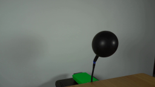
视觉工具实际返回图片 2
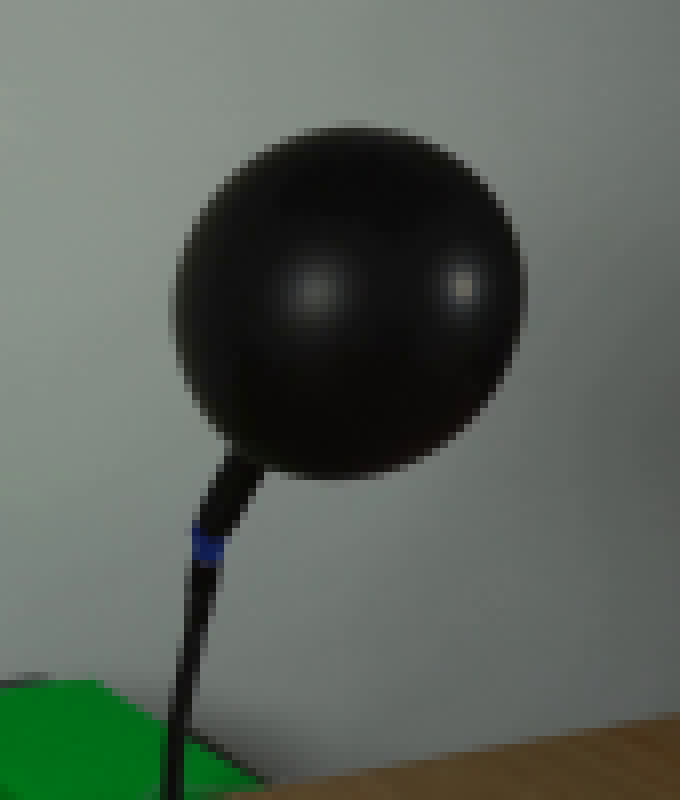
视觉工具实际返回图片 3
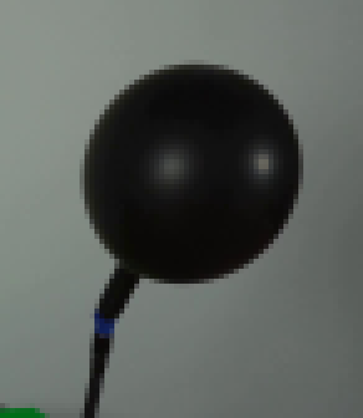
视觉工具实际返回图片 4
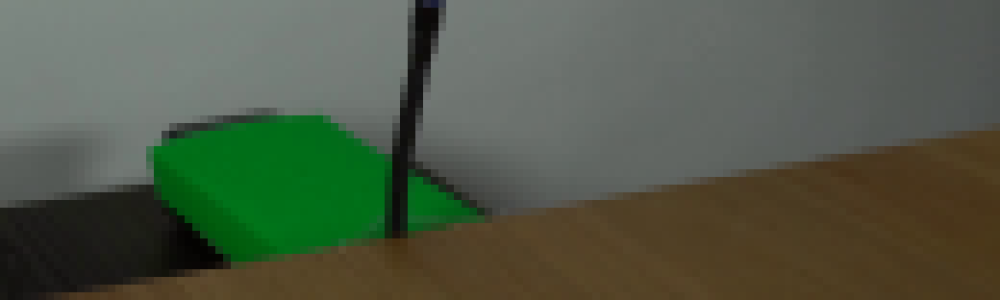
视觉工具实际返回图片 5
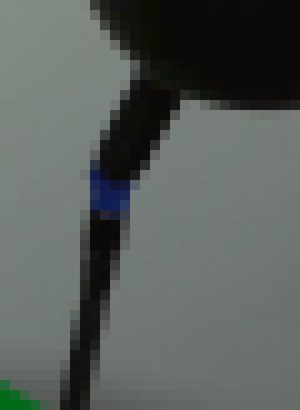
视觉工具实际返回图片 6
视觉工具实际返回图片 7
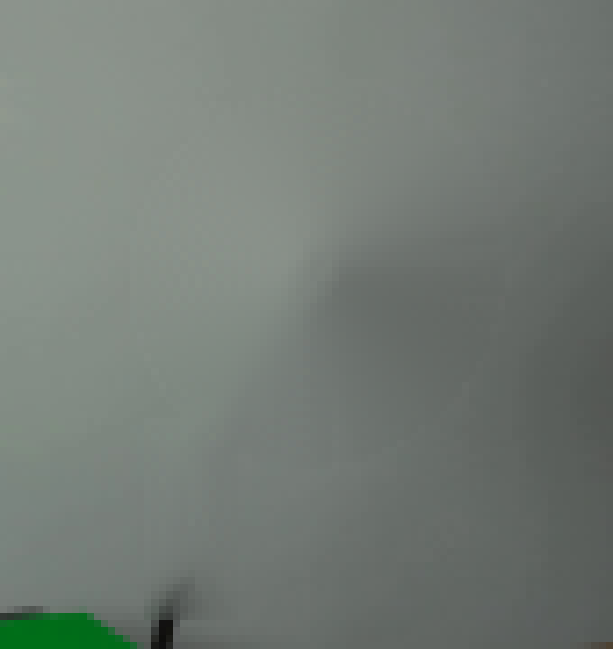
视觉工具实际返回图片 8

视觉工具实际返回图片 9
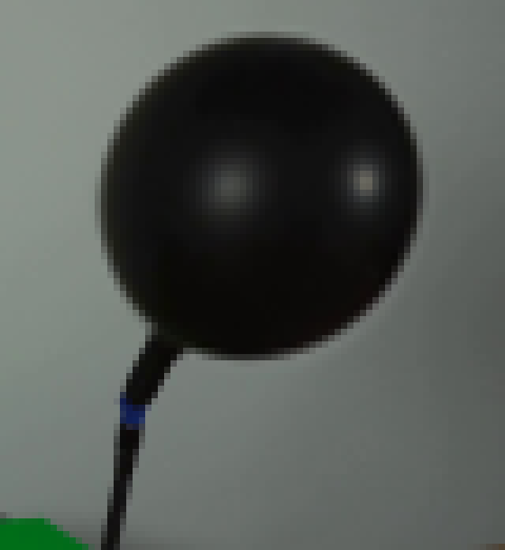
视觉工具实际返回图片 10
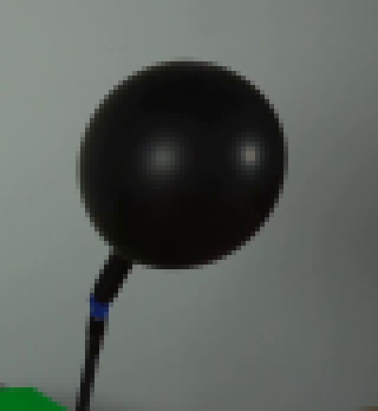
视觉工具实际返回图片 11

视觉工具实际返回图片 12
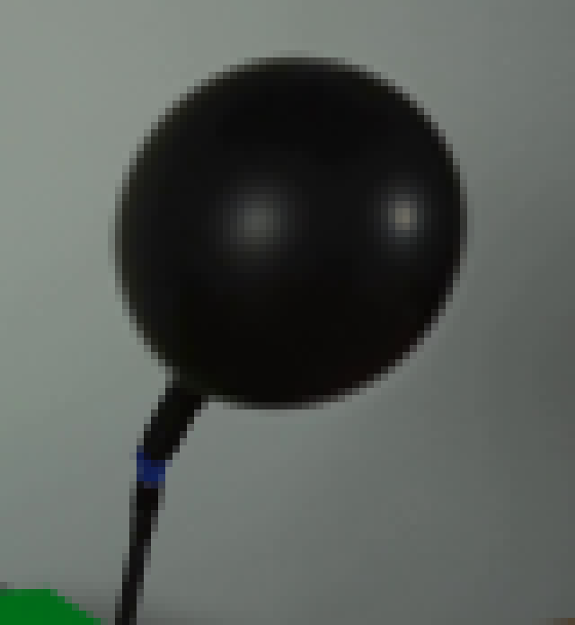
视觉工具实际返回图片 13
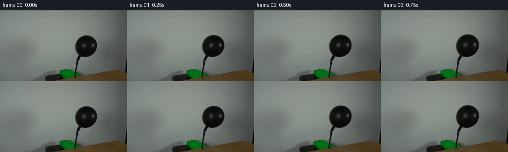
视觉工具实际返回图片 14
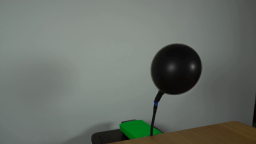
保存候选 1 份；完成命令 37 次；可验证图片返回 14 张。原始 API 响应与完整日志保留在本地。